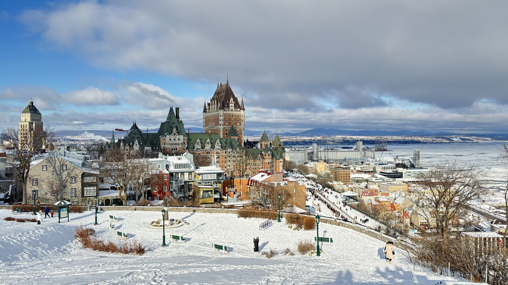
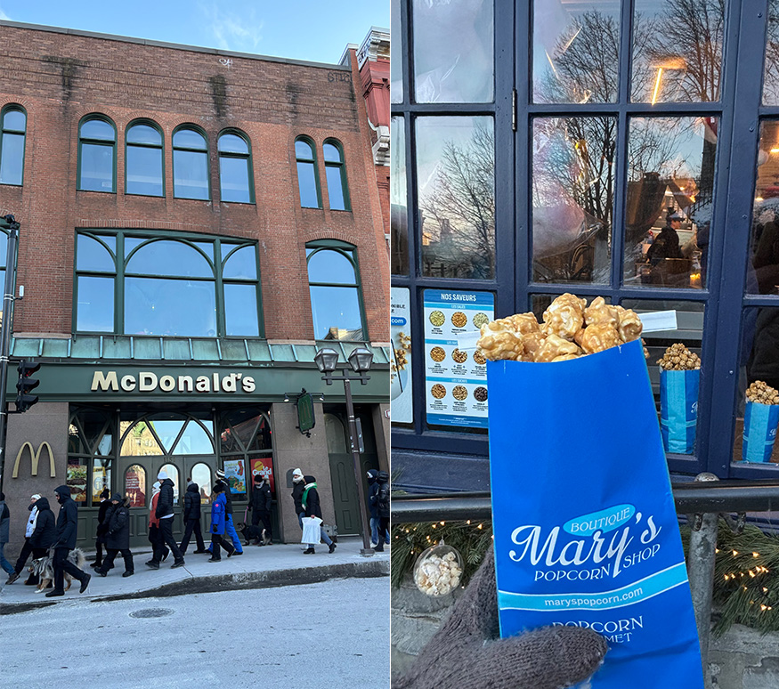
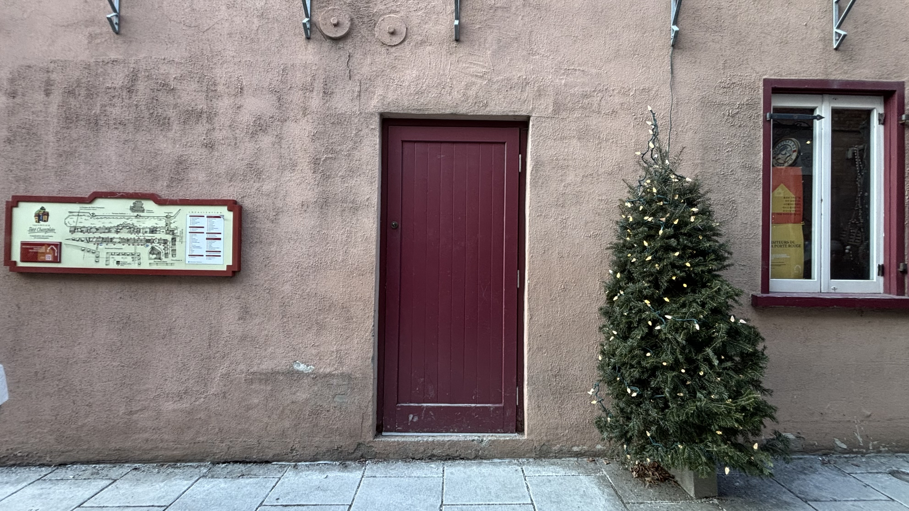
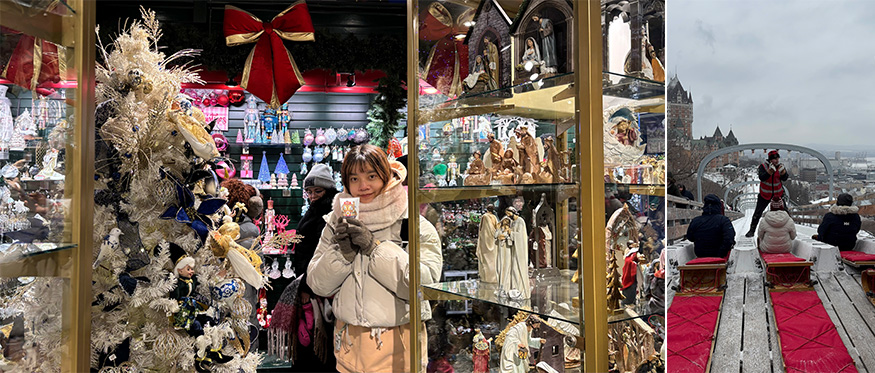

重回錫蘭，笑容依舊
8年前，我踏上一個完全陌生的國度。
那時候的我，還不知道在印度洋上的這塊寶石—斯里蘭卡（或是大家熟悉的「錫蘭」），會在我的生命裡留下這麼深的痕跡。
這是一個經歷過災難與動盪的國家。但我記憶中的，一直都是他們的笑容。純真、溫暖，像是什麼都沒被帶走。
也是在那一次，我遇見了我的人生摯愛—大象。
離開後，我一直知道，人生的某個時刻，我一定會再回來。
8年後，一切發生得很突然。
從請假到出發，不到一個月。
我在雨季，再次踏上這片土地。
火車、風，與那個曾經的自己
第二天開始環島。火車沒有門。我站在門邊，看著風直接灌進來。那一瞬間我才發現8年前的我，好像也是這樣，毫無防備地看著世界。
火車慢慢爬上高山，進入
Kandy。山霧貼在窗邊，茶園一層一層往遠方延伸，茶婦包著頭巾，背著籠子，一片一片地採著葉子。近郊的「獅子岩」更是震撼，幾千年前，人們在巨石上建起空中花園與皇宮，360度環繞著鬱鬱蔥蔥的森林與河流。無論是八年前還是八年後，這座奇蹟帶給我的驚嘆依舊未減。
時間在這裡，好像走得很慢。我們住在一座英式莊園裡。打開門，是一整片花園，遠方是康提湖。有一瞬間，我真的以為自己回到了過去。
 |
✦ 叢林裡，沒有名字的世界
進入國家公園那天，下著大雨。泥濘、積水、動物留下的腳印，到處都是。
池塘邊，精明的鱷魚與蹦跳的小鹿斑比共飲一池水。那一刻，我看見了最原始的生存律動。這裡沒有柵欄，沒有馴化。
然後，我看到牠們。
一整群大象，在路邊慢慢走著，有長著長象牙的領頭象，甩著尾巴，捲起鼻子，把草送進嘴裡。小象跟在母象後面，屁顛屁顛地亂跑，橫衝直撞地探索世界。
那一天，我看到了 57 頭大象。
我坐在吉普車上，看著牠們一整天。什麼都沒做，只是看著。
突然覺得，這個世界其實很安靜。
那些焦慮、比較、爭吵，好像都離我很遠。
大象沒有名字。牠們不需要被定義，也不需要被理解。
牠們只是活著。
 |
海上列車，不說話的相遇
第11天，我來到南端的 Galle。
海的味道是鹹的。我搭上這趟旅程最期待的「海上列車」。
大雨滂沱，印度洋是一整片深黑。
我和一位斯里蘭卡小女孩一起坐在車門邊。我一直抓著她，怕她滑下去。她卻很自在地踢著腳，露出靦腆又燦爛的笑容，斯里蘭卡的笑容。
我們語言不通，但我把餅乾分給她們一家人。她們笑得很開心。
火車沿著海岸線前進。河流、紅樹林、礫石灘，一幕一幕閃過。海浪幾乎要打進車廂。
在一片嘟嘟車的喇叭聲中回到了都市。最後，我們在月台揮手道別。
沒有留下名字，但我記得她的笑。
 |
回來，不只是旅行
旅程結束了。
8 年後，我背著背包，再次在斯里蘭卡流浪。
從叢林、高原，到海岸線。一切都沒有變，但我不一樣了。
我從學生，變成一個每天上班、追求安穩的大人。也差點忘了，自己曾經是那個，會想去遠方、想冒險的人。
但當我站在這片土地上，看著這些毫無保留的生命力，我才想起來，我沒有變得比較勇敢。我只是想起來，我本來就敢。回到日常之後，忙碌還是會把我拉回原本的位置。但有一部分的我，已經被喚醒。
而我知道，我還會再出發。
They don’t have names, because they are wild.
 |